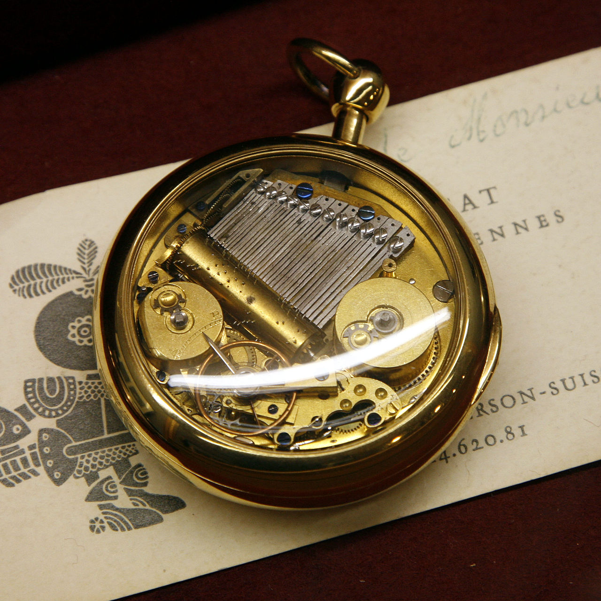

A music box is an automatic musical instrument in a box that produces musical notes by using a set of pins placed on a revolving cylinder or disc to pluck the tuned teeth of a steel comb.
The popular device best known today as a "music box" developed from musical snuff boxes of the 18th century. Some of the more complex boxes also contain a tiny drum and/or bells in addition to the metal comb.
The practice of using tuned steel prongs dates to 1772 and a clock made by Ransonet in Nancy, France. These were, however, placed vertically
In 1796, a clockmaker named Favre-Salomon in Geneva, Switzerland placed them vertically in order to save space.
